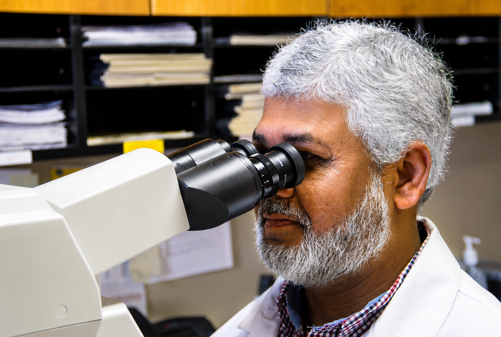
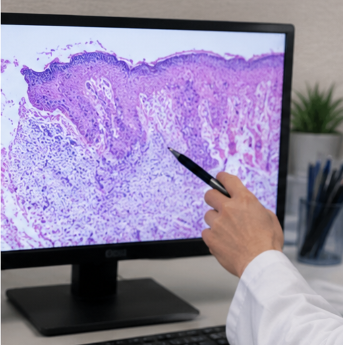
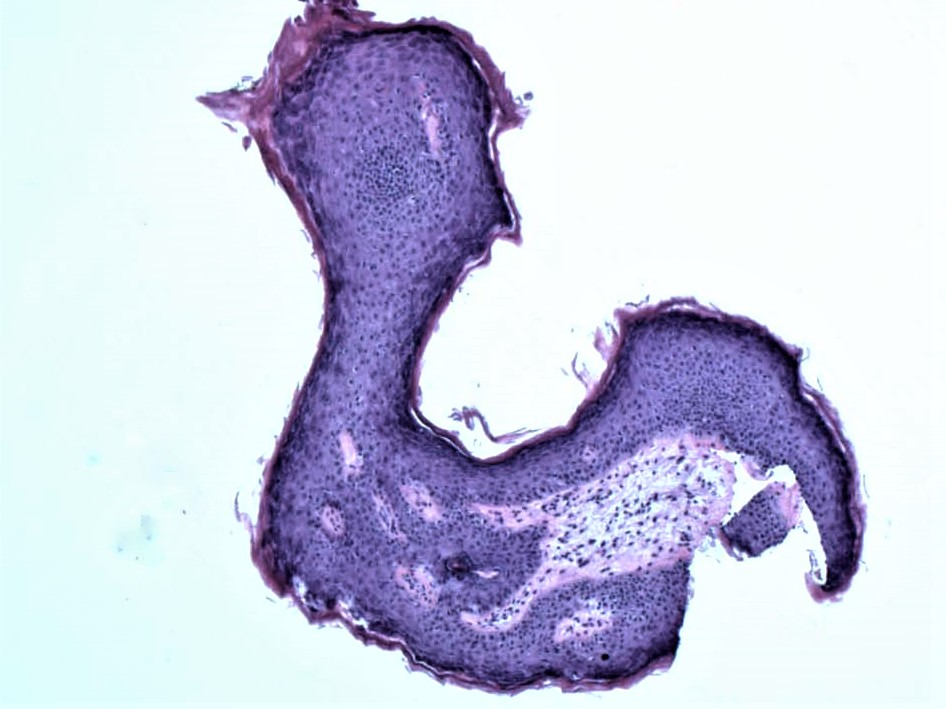

Featured PathArt
Where Pathology Meets Art
Explore the visual beauty hidden within microscopic pathology. PathArt highlights striking patterns, colors and structures found through the science of diagnostic pathology.
Explore GalleryDiagnostic Pathology Expertise
Specialized dermatopathology and podiatric pathology services supporting physicians with accurate, timely and clinically meaningful diagnoses.

Why Benchmark Diagnostics
Focused diagnostic expertise in dermatopathology and podiatric pathology.
Careful evaluation designed to provide physicians with clear and reliable diagnostic information.
Physician-centered communication and dependable support throughout the diagnostic process.
Supporting healthcare providers through pathology consultation and clinical insight.
Advancing pathology through research, publications and continued education.
Our Services

Diagnostic evaluation of skin disorders, biopsies and complex dermatologic conditions.
Learn More
Specialized pathology services supporting podiatrists in the diagnosis of foot and lower-extremity conditions.
Learn More
Pathology consultation and additional diagnostic support for physicians and healthcare organizations.
Learn MorePhysician Resources
Access information related to available pathology testing and services.
Review specimen collection and submission recommendations.
Find laboratory forms and supporting documentation.
Information for submitting cases and requesting diagnostic services.
Contact Benchmark Diagnostics for questions or additional assistance.
Research & Publications

Research
Highlight important pathology research, academic work or educational contributions.
View Item →
Publication
Showcase publications authored or contributed to by Benchmark Diagnostics.
View Item →
Presentation
Highlight lectures, presentations and educational pathology content.
View Item →
Research
Explore additional research and scholarly contributions from Benchmark Diagnostics.
View Item →
Featured PathArt
Explore the visual beauty hidden within microscopic pathology. PathArt highlights striking patterns, colors and structures found through the science of diagnostic pathology.
Explore GalleryContact Benchmark Diagnostics
Contact our team to discuss pathology services, physician resources or laboratory partnerships.